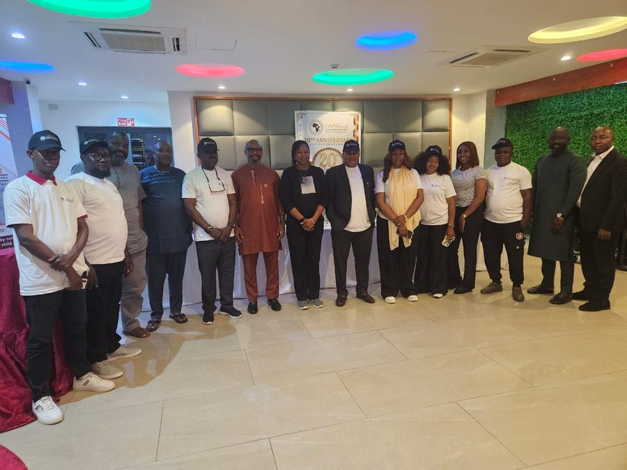
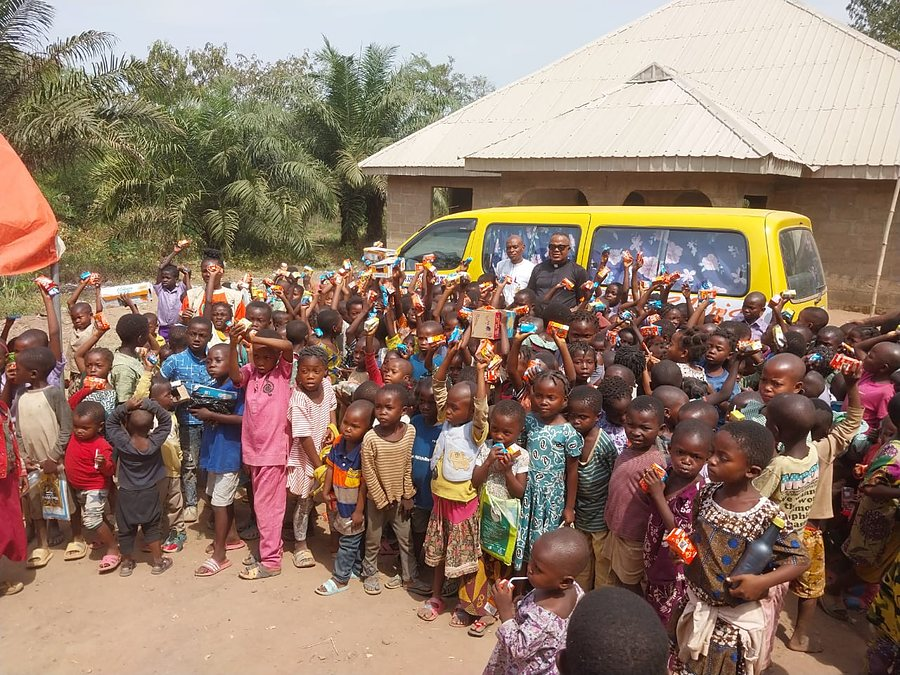
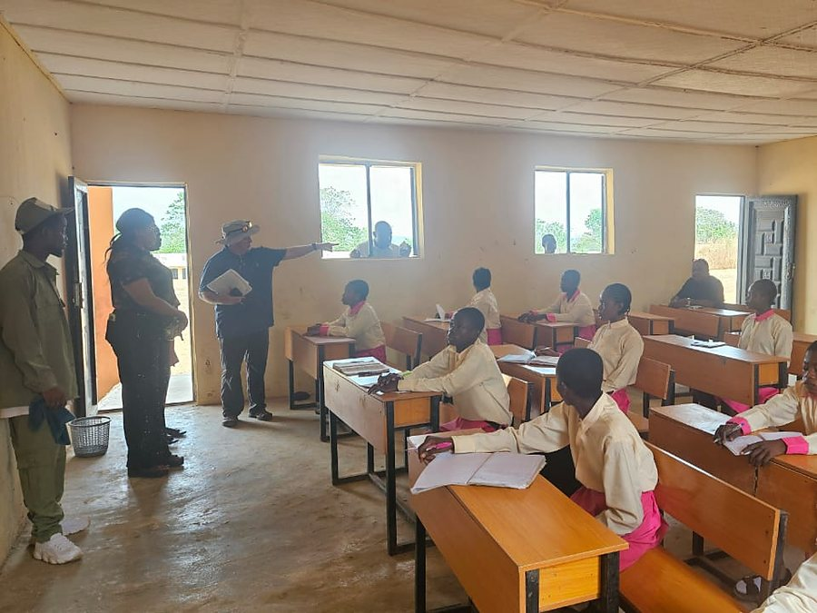

Education
Primary and secondary schools where none exist — and, built into them, the demonstration farms, HELP-A-KID, economic empowerment for parents, and the skills centres designed to send a child out with a trade.

Education for Africa’s Future
Helping Children and Communities Thrive
Improving Children’s Healthcare
Helping Small Business Owners Scale Up
Providing Parents with Micro-Credit Opportunities
Motivating Children Through Agriculture

CORAfrica builds Community Education Centres in rural Nigeria where none exists — then adds a demonstration farm, a school clinic and a skills acquisition centre, so that children can stay within their own community. We provide economic empowerment for their parents, which is what keeps them coming back. Founded in 2006, and now building our next centre in Nasarawa State, near Abuja.
Twenty years of impact, 2006–2026
As at September 2026, across every school, clinic and programme CORAfrica founded. See the track record →

Twenty years, celebrated
Twenty years on, CORAfrica gathered its trustees, partners, donors, volunteers and beneficiaries in Abuja on 5 August 2026, and celebrated in New York and Pennsylvania too.
The Community Education Centre
Hunger, illness and a family with no income take more children out of class than any exam does. So a Community Education Centre runs two programmes, education and healthcare — and builds the school farms, the fee support, the micro-credit for parents and the skills centres into the education itself. It takes a village to raise a child.
Primary and secondary schools where none exist — and, built into them, the demonstration farms, HELP-A-KID, economic empowerment for parents, and the skills centres designed to send a child out with a trade.
A clinic inside the school system, medical outreach to villages that have none, and hygiene and sanitation taught as part of everyday lessons.
What we run today
Everything CORAfrica runs belongs to education or to healthcare. Each part answers a different reason a child stops coming to class.
Agriculture on the timetable rather than in a textbook. Pupils work a real farm through a real season, and leave school with a skill that feeds a family.
Read more → ChildrenA child’s poverty should not decide whether that child is educated. HELP-A-KID pays the fees, and the costs around them, for acutely underprivileged children, so that they can finish the education they have already started.
Read more → FamiliesWhen a family cannot afford to keep a child in class, the barrier is income. The Economic Empowerment Programme lends to the parents — interest-free — so that a business can grow into school fees.
Read more → SkillsWe go a step beyond the conventional classroom, and equip our schools so that a student leaves with a trade as well as a certificate. The centres are designed as working pilots rather than lessons. Those we built in the past have been handed on with the schools we founded, and the next is planned for our new Community Education Centre.
Read more →A child too ill to learn is not being educated. Our clinics sit inside the school system: free to the children who study there, and affordable to everybody else in the community.
Read more →Our clinics go out to the places that have none — rural communities, refugee settlements, schools and orphanages.
Personal hygiene, environmental sanitation, proper handwashing and safe drinking water, taught to pupils as part of school life.
Our registered farming company, founded in 2015: crops, poultry and livestock, and a training ground for rural farmers. A company, not one of our programmes.
Our next Community Education Centre, recently begun, in Nasarawa State, near Abuja.
Our track record
The schools and clinics below were founded by CORAfrica, and are being handed to the institutions that will run them from 2027. That is the model working: we build where there is nothing, prove it, hand it on, and begin again.

Victoria-Ikom — nursery, primary and secondary, where there was no secondary school

Idum-Mbube — a doctor, ten beds, and a community of 20,000

Cross River and Benue — 1,000 trained in agribusiness, six classrooms built in a camp

How we work
CORAfrica was founded in 2006 by Fr. Peter Obele Abue, and it was never meant to run its schools forever. We build where there is nothing, prove that the model works, and hand it to the institutions that will carry it on. Our first two Community Education Centres, at Idum-Mbube and Victoria-Ikom, have done exactly that, and their hand-over completes in 2027. So we have begun again, with a new centre in Nasarawa State.
In the news
Support the work
CORAfrica is a registered 501(c)(3) in the United States, so gifts from US donors are tax-deductible. Give monthly, and we can plan.